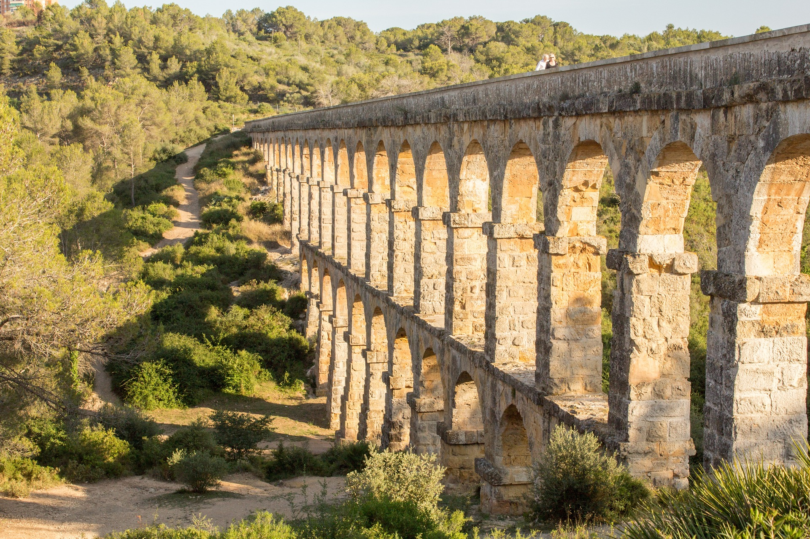
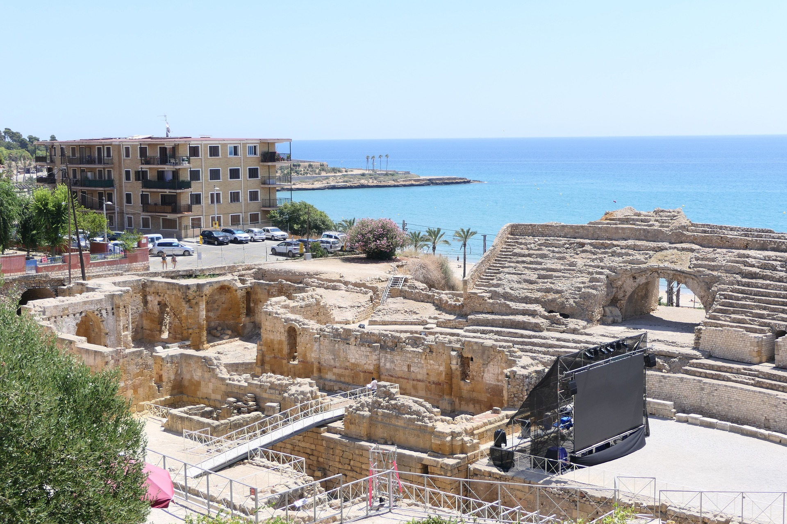
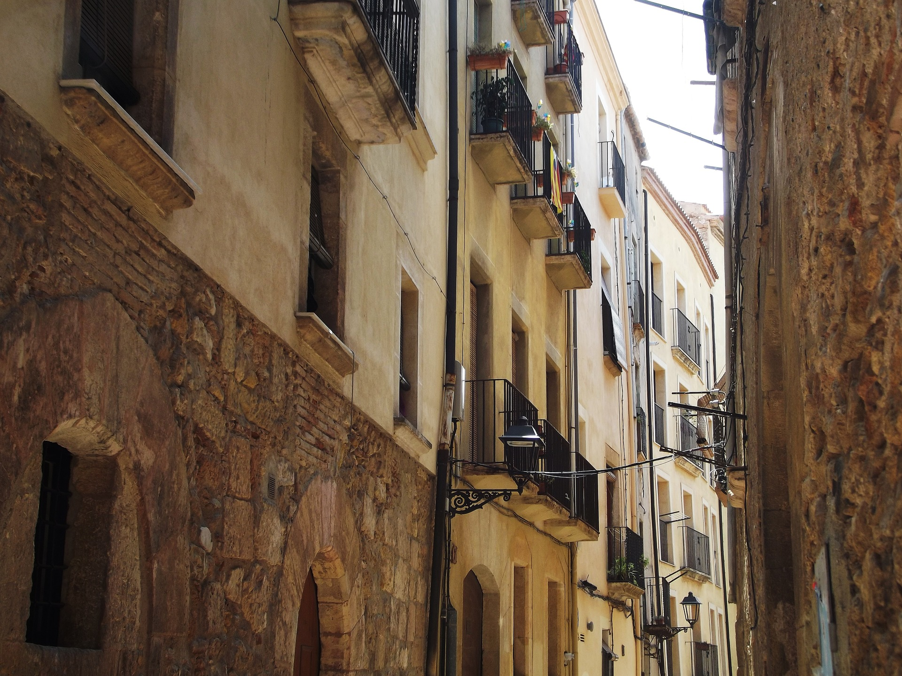
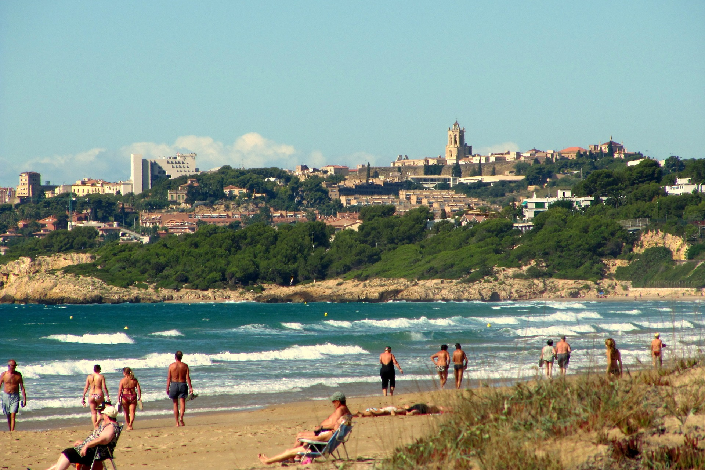

TARRAGONA! anteriorment TARRACO!
Localització
Estat
Espanya
Autonomia
Catalunya
Província
Província de Tarragona
Població
Total
135436
Superfície
57,9 ㎢
Gentilici
Tarragoní/Tarragonina
Època antiga
Les primeres notícies d'habitació a la zona de Tarragona són del segle iii aC, quan hi havia una població ibera, de nom Kesse, que donà nom als cossetans, tribu que habitava el Camp de Tarragona. La localització concreta de Kesse és una qüestió polèmica, ja que hi ha investigadors que consideren que es trobaria propera al port i d'altres que la situen a la part alta. També hi ha experts que identifiquen Kesse amb altres poblacions del Camp de Tarragona, com Valls.
Època moderna
Al llarg dels segles xvi - xvii, la ciutat representà un centre important de poder al sud de Catalunya. En general, el SXVI va ser una etapa de relativa prosperitat i creixement, sota l'amenaça dels atacs marítims pels otomans i els seus aliats nord-africans, fet que explica la realització d'importants obres de defensa. Foren importants les escaramusses entre tropes reials i franco-catalanes durant la Guerra dels Segadors: com el Setge de Tarragona (1641), les batalles navals de 1641 (primera i segona) i el Setge de Tarragona (1644). El 1645 la ciutat aixecà la coronela de Tarragona, que estigué en actiu fins a la seva dissolució en 1666. Josep de Nebot i Font prengué Tarragona el setembre de 1705. Des de 1708, l'exèrcit anglès va fer de Tarragona la seva principal plaça forta, amb la qual va establir connexió permanent amb l'illa de Menorca. Així, va impulsar un procés de fortificació que va actualitzar bona part de les defenses tarragonines, a més de reformar-ne el port. Després de la signatura del Tractat d'Utrecht la ciutat es lliurà a les forces borbòniques de Felipe Manuel de Bette, el marquès de Lede, el 14 de juliol de 1713 pacíficament i sense resistència, ja que les tropes imperials havien rebut l'ordre d'evacuar la ciutat, però l'expedició austriacista de socors comandada per Rafael Nebot fou derrotada al combat de Torredembarra. El marquès de Lede, sota les ordres del duc de Pòpuli, i en última instància per instigació del mateix Felip V d'Espanya, va dur a terme una política de represàlia dels presoners de guerra catalans, que alhora va servir de propaganda per al poder borbònic.
Època contemporània
La ciutat es va veure molt afectada per la Guerra del Francès (1808-14). Inicialment se'n beneficià, donat que acollí la seu de la Junta de Catalunya i rebé un considerable flux de refugiats, elements tots plegats que estimularen l'activitat ciutadana. Però el maig-juny de 1811 la ciutat va ser víctima de l'atac francès Setge de Tarragona que culminà amb la seva presa a l'assalt i un sagnant saqueig de tres dies. Sota domini francès, patí un altre setge, molt menys mortífer que el primer i finalment, en ser abandonada pels ocupants (19 d'agost de 1813), va ser parcialment volada, perdent-se per sempre diverses construccions monumentals, com el Castell del Patriarca. La recuperació posterior va ser relativament ràpida, gràcies a una política hàbil de les elits dirigents tarragonines que van gestionar diferents beneficis que li permetessin la reconstrucció i la solvència econòmica futura: reducció de la pressió fiscal (exempció total de contribucions fins a 1826), represa de les obres de construcció del Port modern i l'obtenció de la capitalitat provincial. Al llarg del segle, Tarragona va viure un important procés de creixement demogràfic, canvi econòmic i transformació urbana. L'element essencial d'aquests canvis va ser l'activitat portuària, lligada especialment a l'exportació de vi. El desenvolupament industrial pròpiament dit va ser menor que en altres ciutats catalanes de l'època, però ben present. El nou barri de la Marina o del Port, planificat a inicis del s. XIX a partir de les construccions preexistents, va concentrar la major part de les transformacions fins que el 1856 s'aconseguí finalment d'enderrocar la Muralla de Sant Joan i se'n va aprofitar l'espai per bastir un gran eix viari (Rambla Nova, que permeté finalment la unió entre Part Alta i Marina, per primer cop des de l'època romana. La Segona República Espanyola i la Guerra civil espanyola marcaren una època força convulsa per Tarragona, sent bombardejada el 5 de novembre de 1938 per l'aviació del bàndol nacional. Durant la postguerra, es va acollir una gran quantitat d'emigrants procedents d'Aragó i Andalusia, d'entre altres regions.
Època actual
La capital ha anat creixent a mesura que han anat passant els anys, sense perdre la històrica rivalitat amb la ciutat de Reus, i això ha fet que s'hagin destinat grans quantitats de diners pel Port de Tarragona, un dels més importants del Mediterrani occidental, actualment un pol d'atracció del tarragonins. La creixent modernització de la ciutat, juntament amb l'evolució demogràfica que ha patit Catalunya en els últims anys, han fet que la ciutat disposi d'importants vies de comunicació amb l'exterior, com el Port, l'Estació de Tren (molt a prop del Barri del Serrallo), el Corredor del Mediterrani, la proximitat amb l'Aeroport de Reus i les carreteres que porten a València i a Barcelona. A més, i en part gràcies als propers pols turístics de Salou, Cambrils, La Pineda (Vila-seca), Tamarit, Altafulla, PortAventura i als futurs BCN World i FerrariLand, i al fet de tenir importants vestigis culturals i històrics, es calcula que la ciutat rep, en les èpoques de temporada alta, més de 2 milions de visitants. Això ha comportat una important entrada de diners i una significativa pujada de la popularitat, però sense cap mena de dubte, el fet que el 2017 Tarragona aculli el XXVIII Jocs Mediterranis, aportarà molta importància a la ciutat, a més de grans infraestructures (esportives, comunicatives, etc) i un gran llegat històric. Actualment, la ciutat disposa del Diari de Tarragona, i de diverses emissions de televisió i ràdio. El 2018 la ciutat va acollir els XVIII Jocs Mediterranis, un any més tard del previst, per culpa de la desorganització i el manca de finances, derivada del retard en la formació del govern de l'Estat que han fet impossible acabar les infraestructures necessàries a temps. L'èxit de l'esdeveniment va ser mitigat.